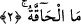
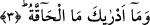
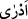
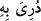
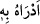

2. Nedir o Hâkka? (Evet) nedir o gerçekleşecek olan?
“Nedir o Hâkka?” Bu cümlenin aslı “nedir o?” şeklinde olmalıdır. Bir başka
ifâdeyle; “onun durumunda ve sıfatında olan hangi şeydir?” denmiş olmaktadır. Çünkü
“mâ” soru edâtı ile sıfat ve durum sorulur. Şu hâlde zâhir bir kelime (el-Hâkka),
“muzmer” yâni zamir yerine konulmuş ve bununla kıyâmet gününün korkunç bir gün
olduğu vurgulanmak istenmiştir. Nitekim böyle bir üslubun Arapçada benzeri
mevcuddur. Sözgelimi “Zeydun mâ Zeydun” denir ki bununla “Zeyd ne Zeyd’dir”
denmek istenir ve böylece Zeyd’in şânının yüce olduğu vurgulanmış olur.
Arapça dilbilgisi kurallarına göre birinci el-Hâkka mübtedâdır. “Me’l-hâkka”
ifâdesindeki “mâ” mübtedâ, el-Hâkka onun haberidir ki bu, birinci mübtedânın cümle
hâlinde haberini teşkil eder. İki cümle arasındaki rabt ise, mübtedânın kendi lâfzı ile
aynen tekrar edilmesidir. Bu ve benzeri cümlelerin dilbilgisi açısından tahlilinde
âlimlerin îzâhı böyledir. Ancak mesele derinlemesine tahkik edildiğinde doğrusu, soru
edâtı olan “mâ”nın, kendisinden sonra gelen cümleye haber olmasıdır. Çünkü burada
cümleden elde edilen fayda, kıyâmet gününün eşi benzeri olmayan bir gün olduğunu ve
ondan bahseden haberlerin korkunç bir haber olduğunu vurgulamaktır. İşte “mâ”nın
haber olması bunu ifâde eder. Çünkü “mâ” edâtını beyân değil de haber olarak
aldığımızda cümleden anlaşılan mânâ; “eşi benzeri olmayan durum, işte hâkka’nın ta
kendisidir” şeklinde olur. Nitekim “mâ”nın mübtedâ, “el-Hâkka”nın haber olması
hâlinde de aynı mânâ anlaşılır. Bu açıklamalar İrşad’da da aynı şekildedir.
3. Gerçekleşecek olanın (kıyâmetin) ne olduğunu sen nereden bileceksin?
Âyette yer alan “/edrâ” fiili, “bilmek” anlamına gelen “dirâyet” masdarından
türemektedir. Arapçada “derâ” ve “/ düriye bihi” ifâdeleri “bildi” anlamına gelir.
Âyette yer aldığı şekliyle “/edrâhu bihi” demek “onu ona bildirdi” demektir. Bu
fiil kendi kendine mef’ûl alabildiği gibi, “bâ” harf-i cerri ile de geçişli olabilir; ancak
fiilin “bâ” harf-i cerri ile geçişli olması daha yaygındır. Cümlenin tahliline gelince;
“mâ” mübtedâ, “edrâke” ifâdesi cümle hâlinde onun haberidir. Burada tahlili tersine
çevirmek yâni “mâ”yı haber, “edrâke”yi mübtedâ olarak kabul etmek mümkün değildir.
Yukardaki açıklamaların ışığı altında âyete; “Ey Muhammed! Sana Hâkka’nın ne
olduğunu bildiren nedir?” şeklinde mânâ vermek mümkündür.
“Me’l-hâkka” ifâdesi de mübtedâ ve haberden oluşan bir cümle olup, “edrâ” fiilinin